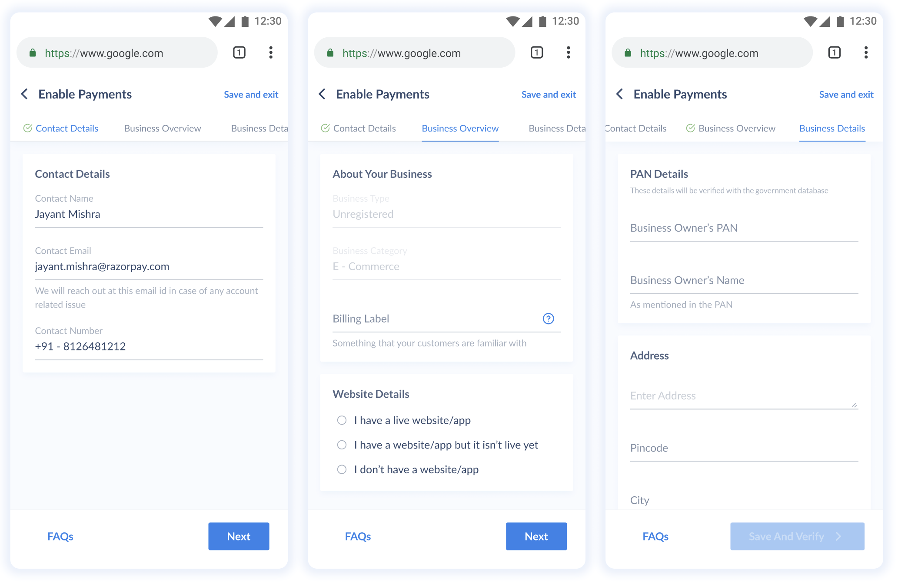
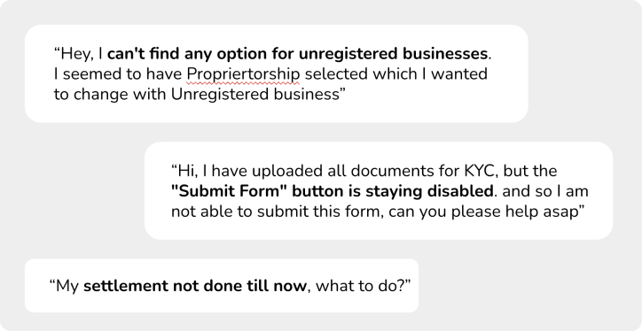
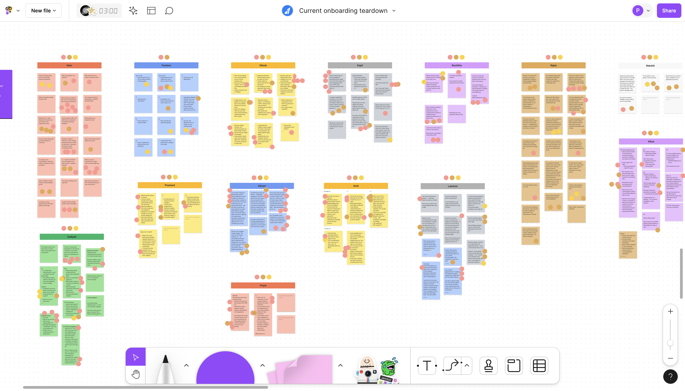
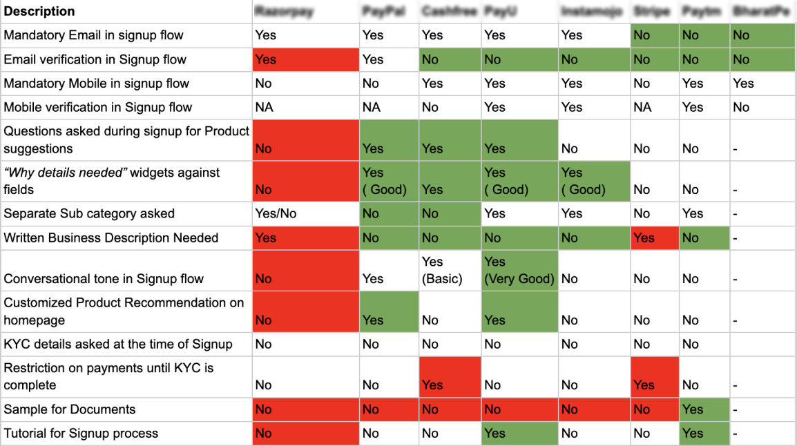
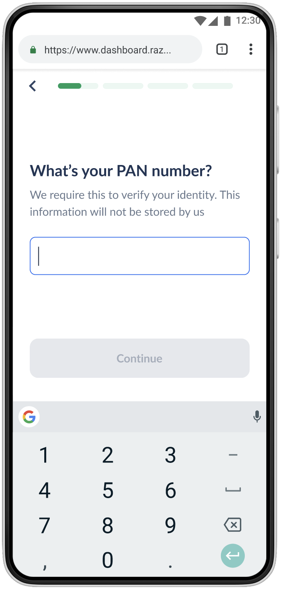
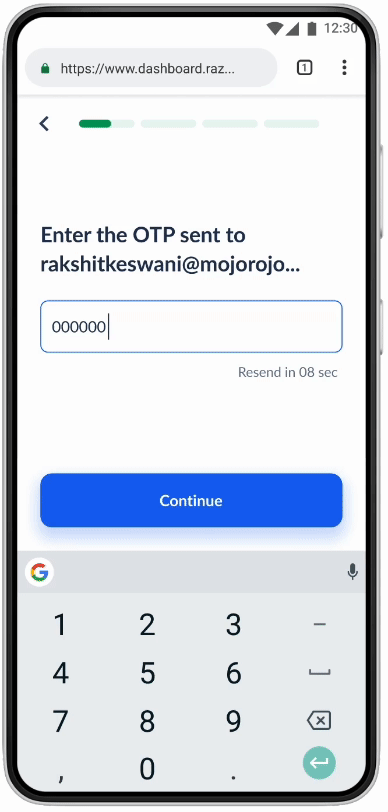

Razorpay · 2021–22
Redesigning merchant onboarding around an existing mental model
To accept payments through Razorpay, a merchant first had to get through a 14-minute compliance form, and a painful share of small merchants never did. I rebuilt the flow around a mental model these merchants already had: opening an account with a helpful bank clerk, one plain question at a time. After launch, form-filling conversion rose 51%, median completion time fell from 14 to 5 minutes, and onboarding support tickets dropped 43%.
- Role
- Product Designer, doing my own research; my first role at Razorpay
- Timeline
- July 2021 – Oct 2022
- Users
- SME merchants, many with low tech literacy
- Evidence
- 150+ support tickets, 50+ session recordings, teardown workshop, competitive analysis, role play, 11-merchant usability test
- Outcome
- 51% conversion lift; 14 to 5 minutes; 43% fewer tickets; internal MVP award
An honest note on the role: I was a product designer on this project, not a researcher. Nobody scoped a study; I did the research because the design needed evidence under it. This is also the project that convinced me to move into research full time.
Context
Onboarding asked merchants for business details, regulatory KYC, and bank information, spread across a tabbed, dense form that took about 14 minutes when everything went well. For the small merchants signing up, a kirana store owner, a home baker, a small exporter, things often didn't go well. The form spoke the language of compliance, and they ran businesses, not paperwork. The cost showed up in two places: merchants who abandoned onboarding before taking their first payment, and a steady stream of support tickets from those who pushed through and got stuck.

Building the evidence base
There was no research team attached to this project, and no budget to commission a study, so the first decision was to mine the evidence the company already had. Two sources were sitting unread, and they were complementary in a useful way: support tickets are written by the people who didn't give up, and session recordings show the people who did.
I read and coded over 150 onboarding support tickets. They mapped exactly where the form broke people: business-type jargon that didn't match how merchants describe themselves, buttons that stayed disabled with no explanation, and silence after submission.

I watched 50+ Hotjar recordings of merchants moving through the form. The recordings showed what tickets couldn't: long pauses on the business-type question, back-and-forth between tabs looking for something familiar, repeated clicks on a disabled button, and the exits.
I ran a teardown workshop with designers and PMs, walking the current flow screen by screen against the ticket and recording evidence. The team annotated every screen with what a low-tech-literacy merchant would be thinking at that moment. The workshop turned an abstract drop-off number into specific, fixable moments, and it meant the people who would later approve the redesign had touched the evidence themselves.

I compared onboarding across eight competitors, global and Indian, on what they asked, when they asked it, and in what tone. The friendliest flows shared a pattern: they asked for less up front, asked conversationally, and explained why each piece of information was needed.

The reframe
The evidence described the problem well but didn't yet suggest a shape for the solution. That came from an observation about the users themselves: these merchants had all opened bank accounts. A bank account application involves the same KYC, the same PAN numbers, the same proof documents, and they had completed it, because a person walked them through it. The task wasn't beyond them. The format was.
To take that seriously, we role-played it: one person as the bank clerk, one as a merchant, acting out how an account actually gets opened across a counter. The clerk never hands over a wall of fields. They ask one thing at a time, in plain words, explain why each document is needed, and respond to the answers. The merchants' mental model for "giving my details to a financial institution" already existed and already worked. The redesign's job was to match it.

Three principles, applied to every screen
The evidence and the role play condensed into three rules that governed the new flow.
One question per screen. Each screen asks exactly one thing, the way a clerk would, with progress always visible so the merchant knows how much is left.

Say why you're asking. Every sensitive request carries a plain-language reason, at the moment of asking rather than in a privacy policy.

Speak merchant, not compliance. Questions use the words merchants use for their own businesses; the regulatory mapping happens behind the screen, where it belongs.
Validation and impact
Before launch, I ran a usability test of the new flow against the old one with 11 merchants. 73% preferred the redesign, and, just as usefully, the sessions caught wording that still read as jargon. The flow went through further iterations against that feedback rather than shipping the first version that tested well.

After launch:
- Form-filling conversion rose 51%.
- Median completion time fell from 14 minutes to 5.
- Onboarding support tickets fell 43%.
- The project won the company's internal MVP award for the quarter.
The number I'm most attached to is the ticket reduction. Conversion measures whether people got through; fewer tickets means fewer shop owners stuck at a counter with no clerk in sight.
Reflection
The breakthrough came from noticing that merchants had already succeeded at this exact task elsewhere, and asking what that experience had that our form lacked. Since then, whenever a flow is failing, my first research question is where these users have done this successfully before, and what carried them through it there. Users usually have a working mental model already; the expensive mistake is inventing a new one for them.
The other lesson is about evidence nobody has to commission. The tickets and recordings were sitting there, describing the problem in users' own words, unread. A lot of research debt is really reading debt.